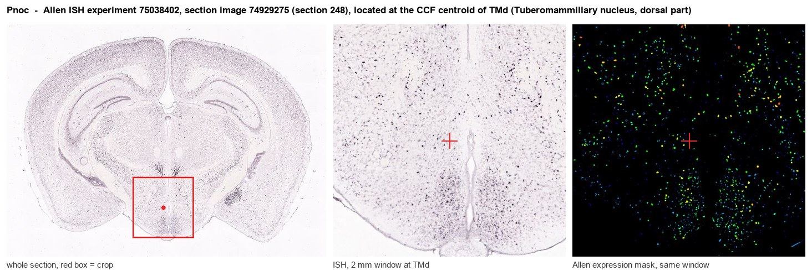
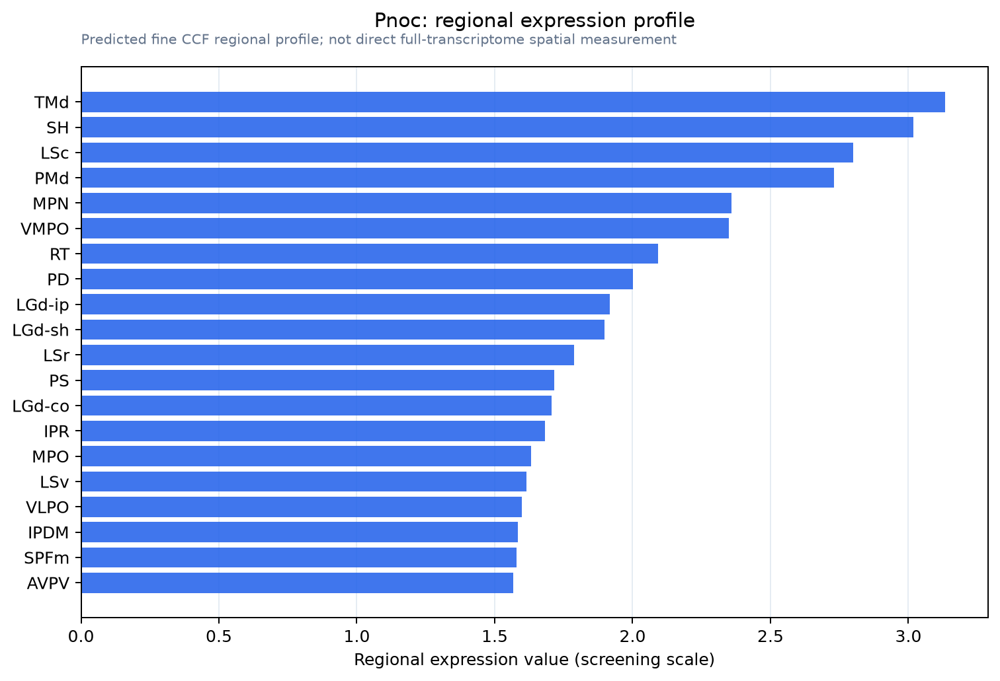

Pnoc
Spatial tier: REGION_BIASED · Class: OTHER · Top region: TMd (Tuberomammillary nucleus, dorsal part) · Positive regions: 40/554
43.4Discovery Score
41.1Targetability Score
CEvidence grade C
What this means: Pnoc: fine CCF profile is region-biased toward TMd (top regions: TMd, SH, LSc, PMd, MPN); this is a discovery lead, not direct proof.
Function in TMd: evidence, prediction, innovation
- Gene function
- Pnoc encodes prepronociceptin, the precursor processed into nociceptin/orphanin FQ (and nocistatin). Nociceptin acts on the Gi/o-coupled NOP (opioid-receptor-like, OPRL1) receptor, opening GIRK channels and inhibiting calcium channels and cAMP, so it is broadly inhibitory; the system modulates feeding, stress, anxiety and pain and is a marker of distinct hypothalamic neuron classes.
- Region function
- The dorsal tuberomammillary nucleus contains the brain's only histaminergic neurons; they project diffusely to cortex, thalamus and hypothalamus and promote wakefulness, arousal and attention, and they are the target of sedating antihistamines.
- Published in this region
- inferred No region-specific literature found. PNOC neurons have been dissected in detail in the neighbouring arcuate nucleus, where Jais 2020 showed PNOC-ARC neurons drive high-fat-diet hyperphagia and inhibit POMC neurons, and Solheim 2025 showed hypothalamic PNOC/NPY neurons mediate leptin-controlled energy homeostasis; single-cell atlases of the hypothalamus place Pnoc across several posterior hypothalamic clusters (Steuernagel 2022).
- Predicted function
- Prediction: nociceptin released in the tuberomammillary region would act on NOP receptors to hyperpolarise histaminergic neurons through GIRK, providing a peptidergic sleep-promoting brake on the histamine arousal system in parallel with GABA from the ventrolateral preoptic nucleus. Local nociceptin or a NOP agonist should silence TMN histaminergic firing and increase NREM sleep and sedation, whereas the NOP antagonist J-113397 or Pnoc deletion is predicted to increase wakefulness and blunt stress- or diet-induced suppression of arousal.
- Innovation
- ★★★★☆ 4/5 The nociceptin system is well studied in arcuate and amygdala but not in the histaminergic nucleus, where NOP agonists (already in clinical development for sleep) would have an obvious mechanism.
- Tools
- Pnoc-Cre and Pnoc-eGFP mice; NOP agonists Ro 64-6198 and SCH-221510, antagonist J-113397; Oprl1 knockout and Oprl1-Cre lines; Hdc-Cre for histaminergic targeting.
- References
Direct evidence located at the region

Allen ISH experiment 75038402, section image 74929275 (section 248): the section that contains the CCF centroid of Tuberomammillary nucleus, dorsal part according to the Allen image-to-atlas alignment (reference_to_image), with a 2 mm window around that point. Left: whole section, red box = window. Middle: ISH signal. Right: Allen's expression-mask view of the same window. open this image in the Allen viewer
Look it up yourself: Allen Mouse Brain ISH for PnocAllen reference atlas: TMd (structure 1126)ABC Atlas MERFISH viewer(in the ABC Atlas choose dataset MERFISH-C57BL6J-638850-CCF, colour cells by gene "Pnoc" or by parcellation_substructure "TMd")All genes confined to TMd + 3-D brain
Direct spatial evidence
MERFISH REGION LOCATOR

Regional expression figure

Predicted WMB × fine-CCF profile; not direct full-transcriptome spatial measurement.
Spatial profile
Evidence and specificity
- Evidence status
- PREDICTED_FINE
- Direct sources
- None; predicted localization only
- Exclusive threshold
- 12 positive regions out of 554
- Spatial specificity
- 0.307
- Top-region fraction
- 0.043
- Filter status
- PASS
Interpretation limits
- Cell-type-to-region projection is imputed expression, not direct spatial measurement.
- Adult reference atlases do not establish stability across age, sex, strain, state, or disease.
- Transcript abundance does not guarantee protein abundance or genetic-tool performance.